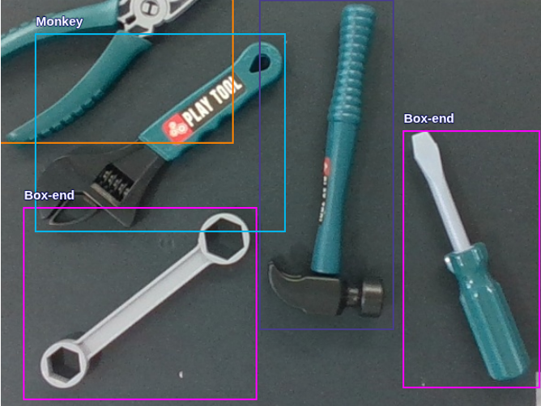
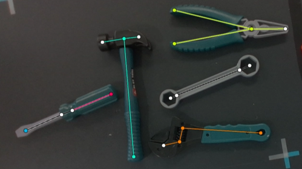
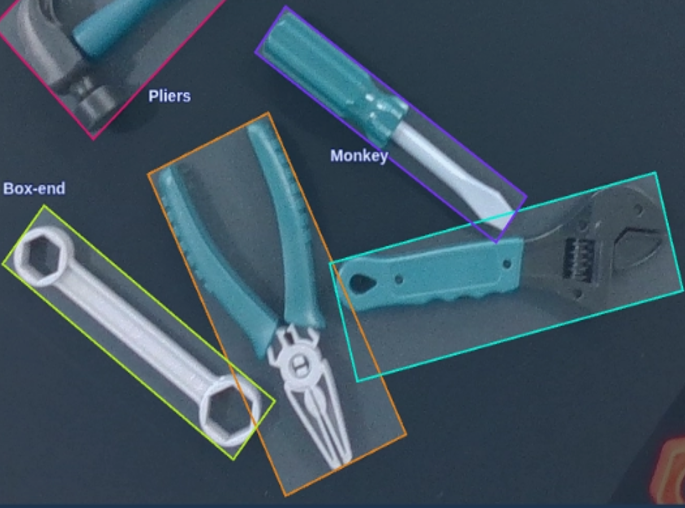

시스템 전체의 조화를 먼저 생각하는 개발자
옥윤정.
Yunjeong Ok — Robotics & Aerospace Engineer
Robotics & Aerospace · Portfolio 2026
옥윤정.
시스템 전체의 조화를 먼저 생각하는 개발자
목차
Index01 — Profile
프로필

Skills
- MATLAB · Simulink
- Python
- ROS 2
- NVIDIA Isaac Sim
- Gazebo
자격증 · Certs
- TOEIC Speaking — Advanced Low
- ISTQB · ADsP
- 컴퓨터활용능력 2급
역량 · Strengths
- System Integration
- ROS 2 통신 설계 · 구현
- System Interface 설계
- Computer Vision
- 팀 소통 · 기술 리딩
Focus
로봇 테스트 · 시스템 통합 엔지니어 — 시뮬레이션과 실제 환경 양쪽에서 동작을 검증한다.
Doosan Bootcamp · 2025.12.08–2026.06.12
ROBOT · 두산 부트캠프
Doosan Bootcamp · 두산 P1
협동로봇 빙수 제조 · Bingsu Cobot
두산 P1 — Bingsu Cobot
협동로봇을 이용한 빙수 제조로봇

주제
두산 로보틱스 M0609 협동로봇으로 컵빙수 제조 전 과정을 자동화 — 주문부터 가니시, 닉네임 부착까지.
기능
- 제빙 · 팥/연유 토핑 · 픽업대 적재 전 동작 수행
- 주문자 닉네임을 스티커에 써서 컵에 부착
- 키오스크(web) 주문 · 진행 동작 실시간 반영
- 제조 중 외력 감지 시 즉시 일시정지
- 관리자 web / 고객 web 분리 구현
기술
역할 · My role
- 단위 기능 간 ROS 2 인터페이스 설계
- 전체 기능 통합 및 web 연동 설계
- 글씨쓰기 알고리즘 구현
두산 P1 — mother_bird 전체 시스템
시스템 아키텍처 — 주문 → 로봇 → 서빙 전체 흐름
두산 P1 — Handwriting Routine
닉네임 쓰기 — 글씨쓰기 알고리즘
Handwriting Algorithm — Flow
Hershey 필기체 폰트 — 글자 = 획(stroke) 목록
strokes = [ [(x0,y0),(x1,y1),...], ... ]
bounding box 중심 정렬 → 40mm 안으로 스케일
scale = 40.0 / max(width, height)
rx = CENTER_X − dy · scale
ry = CENTER_Y − dx · scale
n = dist / 1mm · blend_radius=3mm → 곡선 부드럽게
Z 강성 300 N/m (유연) · XY 3000 N/m (고정) · 목표힘 −20N


두산 P1 — ROS 2 통합 & 하드웨어 설계
TROUBLE SHOOTING
Case 1 — ROS 2 인터페이스 부재로 인한 통합 병목
문제 상황
- 인터페이스 미정의 상태로 기능별 개발 진행
- 통합 시 코드 수정 범위 급증 · 패키지 구조 불일치
대응
- 재정비 대신 하드코딩 선통합 선택
- 시나리오 동작 · 기능 간 연동 우선 검증
결과 · 배운 점
- 초기 인터페이스 규약 확정 필수
- Mock data 기반 사전 통합 테스트
- 공통 패키지 구조 사전 정렬
Case 2 — 펜 홀더 휘어짐 · 물리적 설계 문제
문제 상황
- 2-finger 그리퍼로 펜을 안정적으로 고정 불가
- 글씨 쓰는 중 펜이 앞뒤로 휘어져 획이 틀어짐
- 알고리즘 · 힘제어 수정으로 해결 불가
대응
- 지우개 홀더 · 집게 등 여러 고정 방법 시도
- 분필 홀더 채택 — 내부 스프링으로 Z축 완충
- 파지 부위에 스포츠 테이프 부착 · 파지력 조절
결과 · 배운 점
- 안정적인 접촉압으로 균일한 필기 구현
- 실제 로봇 문제 해결은 알고리즘 수정과 도구의 물리적 설계가 함께 동반되어야 함
.png)

.png)


Doosan Bootcamp · 두산 P2
Doob-E · 음성 공구 정리 어시스턴트
두산 P2 — Doob-E · Tool Sorting
협동로봇을 이용한 공구 정리 어시스턴트

주제
두산 로보틱스 M0609 협동로봇으로 정비소 공구를 음성 명령에 따라 인식 · 분류 · 정리하는 어시스턴트.
기능
- STT 기반 음성 명령으로 로봇 동작
- 카메라로 감지한 볼트 · 너트 · 공구를 명령대로 정리 (초록 볼트만 / 공구 빼고 / 모두)
- 관리자 web 을 통한 로봇 관리
- 카메라에 손 감지 시 일시정지, 손이 빠지면 이어서 동작
기술
역할 · My role
- STT 설계
- 전체 기능 통합
- Gazebo 시뮬레이션 환경 구축
- Web UI 수정 및 기능 추가 (비상정지, 동작 중 WakeWord 비활성화 등)
두산 P2 — Sim & Real Architecture
시스템 아키텍처 — Gazebo & 실제 로봇
두산 P2 — Sim vs Real 비교
관제 시스템 & Gazebo 병렬화
 SIM
Gazebo Harmonic 시뮬레이션 환경
REAL
실제 로봇 동작 + YOLO 감지 화면
SIM
Gazebo Harmonic 시뮬레이션 환경
REAL
실제 로봇 동작 + YOLO 감지 화면
 Doob-E CMS — Gazebo 모드 관제
Doob-E CMS — Gazebo 모드 관제
 실제 관제 화면 — Doob-E Control Management System
실제 관제 화면 — Doob-E Control Management System
두산 P2 — Sim 검증 & 비전 인식 개선
TROUBLE SHOOTING
Case 1 — Real Robot 코드와 병행 가능한 Simulation 검증 환경 구축
문제 상황
- 실물 로봇 수 제한 — Gazebo 검증 환경 필요
- real 코드 구조 유지 + sim 실행 환경 분리 필요
대응
- real 코드 유지 + sim mode 추가 및 실행 경로 분리
- ROS_DOMAIN_ID 등 mode별 환경 설정 분리
결과 · 배운 점
- end-to-end sim 검증 환경 구축
- 실행 환경 표준화 · 테스트 문서화 필요성 확인
Case 2 — YOLOv8 공구 파지 실패 · Keypoint + OBB 재학습
팀원 진행문제 상황
- YOLOv8 bbox 모델 — 볼트·너트는 파지 성공
- 공구는 특정 각도·방향 아니면 파지 실패 빈번
대응
- Keypoint 추가 — 공구를 특정 방향으로 집도록 재학습
- OBB(Oriented Bounding Box) 추가로 회전 각도 인식 보강
결과 · 배운 점
- 공구 파지 방향 제어 가능 — 파지 성공률 향상
- 객체 형태·용도에 따라 검출 방식(bbox / keypoint / OBB) 선택 필요



Doosan Bootcamp · 두산 P3 · Isaac Sim 5.1
양식장 청소 멀티로봇
두산 P3 — AquaSweep · Isaac Sim 5.1
양식장 청소 멀티로봇 시뮬레이션
 Isaac Sim · 수조 7개 · 철갑상어 + Hippo
Isaac Sim · 수조 7개 · 철갑상어 + Hippo
 aqua_dashboard · YOLO OBB 탐지 + Hippo 수중뷰
aqua_dashboard · YOLO OBB 탐지 + Hippo 수중뷰
주제
NVIDIA Isaac Sim 5.1 위에 철갑상어 양식장(수조 7개, 40×30 m)을 재현하고, ROS 2로 제어되는 3종 15대 로봇이 바닥·벽면 청소와 폐어 수거를 자율 협조로 수행하는 멀티로봇 시뮬레이션.
로봇 3종
Hippo ×7
BCD 부력 제어 수중 주행 · 아르키메데스 나선 경로 · 이물질 흡입
M1013 코봇 ×7
원형 레일 6축 코봇 · 레일+관절 동시 구동 · 지그재그 벽면 청소
갠트리 ×1
천장 XYZ 크레인 · 흡착 패드 · 폐어 수거함 이송
기술
역할 · My role
- Isaac Sim 익스텐션 전체 설계 · 구현 — 환경·물리·로봇 8종 익스텐션
- aqua_detection — YOLO OBB 철갑상어 탐지 + OpenCV 이물질 검출 파이프라인
- Planner → Controller → Isaac Sim 멀티로봇 오케스트레이션 통합
두산 P3 — AquaSweep 시스템
시스템 아키텍처 & 멀티로봇 협조 흐름
15
총 로봇 대수
7
수조 (Pool)
8
Isaac Ext.
6
ROS 2 Pkg
40×30
m 양식장
두산 P3 — AquaSweep 비전 & 시뮬레이션
TROUBLE SHOOTING
Case 1 — TopCamExtension AttributeError: _on_timeline_event 메서드 누락
문제 상황
- 콘솔 log 정리 중
_on_timeline_event메서드 헤더 실수로 삭제됨 - 타임라인 이벤트 구독 등록 시 런타임 속성 누락 → 카메라 익스텐션 시동 불가
대응
- extension.py 내 메서드 헤더 및 클래스 들여쓰기 완전 복구
- 핫 리로드 후 카메라 연동 정상 시동 검증
결과 · 배운 점
- 카메라 연동 즉시 정상화
- Isaac Sim 익스텐션 리팩터링 시 이벤트 콜백 헤더 보존이 필수임을 체득
Case 2 — 벽면 그림자 오탐지 — 유령 이물질 수십 개 폭증
문제 상황
- 조명 평탄화 후
bitwise_not적용 시 수조 벽면 그림자·이미지 경계선이 이물질로 오탐지 - 이물질 카운트 수십 개로 비정상 폭증
대응
- 유효 면적 25–450 px 듀얼 threshold — 거대 테두리 차단
- 원형 절삭 마스크 반경
−55 px조정 — 벽면 그림자를 마스크 밖으로 배제
결과 · 배운 점
- 벽면 오탐지 완전 제거, 이물질 탐지 정밀도 향상
- 이진화 파이프라인에서 면적 필터 + 형태 마스크 조합의 중요성 체득
cv2.threshold(img, 220, 255, THRESH_BINARY)
→ 벽면 그림자 오탐지 수십 개 폭증
area_filter(25–450 px) + mask_radius −55 px
→ 오탐지 완전 제거
Case 3 — 수면 부근 철갑상어 미탐지 — 고정 임계값 한계
문제 상황
- 고정 임계값(220) 이진화로 수면 하이라이트 속 흐릿한 상어 픽셀(235–245) 전부 배경 처리
- 수면 근처 개체 미탐지 빈번 발생
대응
cv2.adaptiveThreshold(BlockSize=151, 가우시안)로 전환- 국소 윈도우 내 상대 명암 기반으로 흐릿한 상어 윤곽 복원
결과 · 배운 점
- 수면 근처 흐릿한 상어 안정 탐지, 미탐지 현저히 감소
- 수중 조도 변화 환경에서 adaptive 방식의 우수성 확인
cv2.threshold(gray, 220, 255, THRESH_BINARY)
→ 수면 픽셀(235–245) 전부 배경 처리
cv2.adaptiveThreshold(blockSize=151, GAUSSIAN_C)
→ 흐릿한 상어 윤곽 복원, 미탐지 현저히 감소
Doosan Bootcamp · 두산 P4 · TurtleBot4
간호사 보조 의료로봇
두산 P4 — MediCart · TurtleBot4
간호사 보조 의료로봇 시스템


주제
TurtleBot4 기반 병원 순회 보조 로봇 — 자율 회진(Mode A)으로 병실을 순회해 환자 재실·신원을 확인하고, 간호사 투약 보조(Mode B)로 약품 라벨을 OCR 검증하는 이중 미션 시스템.
운영 모드 2종
Mode A · 자율 회진
병실 Nav2 순회 → YOLO+QR 환자 확인 → 웹 문진표 작성 → Firebase 업데이트
Mode B · 투약 보조
간호사 추종(OAK-D ReID) → STANDBY → 약품 라벨 OCR 검증 (GCP Vision API)
기술
역할 · My role
- Mode A 회진 통합 — mission_manager patrol 상태머신 전체 구현
- Nav2 병실 순회 로직 · patient_identifier 연동 · Firebase 상태 기록
- 웹 문진 완료 대기(INTERVIEW) ↔ 상태머신 전환 인터페이스 설계
- Mode B 투약 보조 (간호사 추종 · OCR 검증) — 팀원 담당
두산 P4 — Mode A 자율 회진
시스템 아키텍처 · 회진 통합 구조
ROS 2 패키지 구성
웹 시스템
하드웨어
두산 P4 — MediCart 회진 통합
TROUBLE SHOOTING
Case 1 — Nav2 초기 위치 미설정 — 회진 시작 후 로봇 이동 불가
문제 상황
/robot6/start_patrol호출 후 Undock만 하고 병실로 이동 안 됨- AMCL이 자기 위치 미인식 상태 — Nav2 planner 실패
대응
- RViz
2D Pose Estimate로 초기 위치 설정 필수화 - 대시보드에 위치 미설정 시 patrol 버튼 비활성화 가드 추가
결과 · 배운 점
- 초기 위치 설정 후 병실 순회 정상 동작
- Nav2 운용 시 localization 선행이 필수 전제조건임을 확인
Case 2 — 회진 상태머신 INTERVIEW 스텍 — 웹 문진 완료 신호 누락
문제 상황
- 환자 확인 후 INTERVIEW에서 다음 병실로 전환 안 되고 무한 대기
- 웹 문진앱이 Firebase에 직접 저장하지만 ROS2 상태머신이 완료 이벤트를 수신 못 함
대응
- dashboard에
/robot6/intake_done서비스 추가 — 웹 제출 시 호출 - mission_manager가 수신 시 INTERVIEW → NEXT_ROOM 전환
결과 · 배운 점
- 회진 루프 end-to-end 정상 동작 확인
- ROS2 상태머신과 웹앱 간 명시적 완료 신호 설계의 중요성 체득
Case 3 — INTEL_AUTH_TOKEN 불일치 — 로그인 후 /login 루프
문제 상황
- 로그인 성공 후에도
/login으로 계속 리다이렉트 - Flask 백엔드 · Next.js 프론트의
INTEL_AUTH_TOKEN.env 값 불일치
대응
- 두 .env 파일의 토큰 값 동기화 후 팀 공유 .env 템플릿 작성
- README에 토큰 동기화 필수 절차 명시
결과 · 배운 점
- 로그인 루프 즉시 해소
- 멀티 서비스 환경에서 공유 시크릿 관리 체계 수립의 중요성 인지
University Projects · RL & Control
ROBOT · 교내 프로젝트
교내 P1 — DRL Study · PyBullet · 2024.03–12
DRL 이론 분석 · 코드 분해 · 시뮬 검증 스터디

주제
DRL 이론 학습 스터디 — DTaglietti/Pick-and-Place-with-RL reference code를 분석하며 PyBullet 기반 DQN Pick & Place 파이프라인을 이해. 실제 로봇 적용은 최종 미완성.
학습 설계
관찰
37×37 바이너리 이미지 · CNN Policy
보상
pick 성공 +1 · 실패 −2
알고리즘
DQN · TD3 이론 학습
시행착오
- Camera→World 좌표 변환 — 내부 파라미터·R·T 계산, 큐브 위치 고정 후 해결
- Depth 정규화 — 0~255 값을
depth / 255.0 × far로 실제 거리 복원
기술
배운 점 · Lessons Learned
My role
Reference Code 아키텍처 분석 · camera→world 좌표 변환 · depth 정규화 구현
교훈
실제 로봇 적용 실패 → DRL 이론·동작 방식의 깊은 이해. 코드 분석 자체가 설계 역량을 키우는 과정.
교내 P2 — RCS 동계 스터디 · KAU · 2023.12–2024.02
3축 Planar 로봇팔 — 이론부터 원 그리기까지


주제
한국항공대학교 RCS 동계 스터디 — 2링크·3링크 planar 로봇팔의 기구학 이론을 학습하고, MATLAB 시뮬레이션 → Arduino 실제 구현으로 원 궤적을 그리는 end-to-end 프로젝트.
3단계 구성
기술
핵심 학습
DH parameter로 로봇 모델링 → 역기구학(기하·수치)으로 원 경로 계산 → Dynamixel 관절 제어로 실물 궤적 추종 검증
배운 점 · Lessons Learned
Singularity 문제
제작 기간의 한계로 3축 robot arm이 최선 — 목표는 원이었으나 singularity 영역에서 레몬 형태로 찌그러짐. 좌표·각도 다변화 및 특이점 회피 시도에도 모터 한계 + 관절 충돌 등 복합 원인 존재.
교훈
알고리즘을 짜거나 시스템을 설계할 때, 기계 자체의 물리적 한계를 전제로 두어야 한다. 소프트웨어만으로 해결할 수 없는 영역이 반드시 존재한다.
Capstone · 졸업작품
VISION
카메라 비전 정보만으로 Landing Marker를 인식하고 드론을 안전하게 착륙시키는 자율착륙 시스템 — AirSim 시뮬레이션과 DJI Tello 실물 검증.
VISION — 졸업작품 · 종합설계2 · 2024년 1학기
Vision-Based Autonomous Landing


주제
모든 센서 고장을 가정하고, 카메라 정면 비전 정보만으로 Landing Marker를 인식해 드론을 안전하게 자율 착륙시키는 시스템. AirSim 시뮬레이션 검증 후 DJI Tello 실물 적용.
핵심 기술 3단계
결과
11.5 cm
Simulation 오차
13.3 cm
Real World 오차
※ Tello 기체 폭 98 mm 기준 · 목표 오차 15 cm 이내 달성 · Sim → Real 전환 오차 +1.8 cm
기술
역할 · My role
Landing Algorithm 설계 · Camera Calibration · Distance 계산 구현 · AirSim 시뮬레이션 환경 구축
Appendix — Embedded · 항공 · 우주 하드웨어
EMBEDDED 빌드


Cruise Control
MATLAB SIMULINK를 이용한 크루즈 컨트롤 시스템 설계 및 시뮬레이션. 차량 속도 제어 요구사항 정의 → 제어기 설계 → 다양한 시나리오 결과 검증.


Satellite Mockup
우주쓰레기 포집 실험용 실제 위성 목업. 직접 설계 → 3mm 합판 레이저 커팅 조립. Lite 6 XArm 로봇과 연동해 포집 시나리오 검증.
Thank you.
ROS 2 인터페이스 정의부터 mock data 기반 통합 테스트, sim/real 환경 분리까지 — 개별 기능이 아니라 시스템 전체가 맞물려 동작하도록 설계하고, 통합 단계에서 무너지지 않는 로봇을 만드는 로봇 테스트 · 시스템 통합 엔지니어가 되겠습니다.